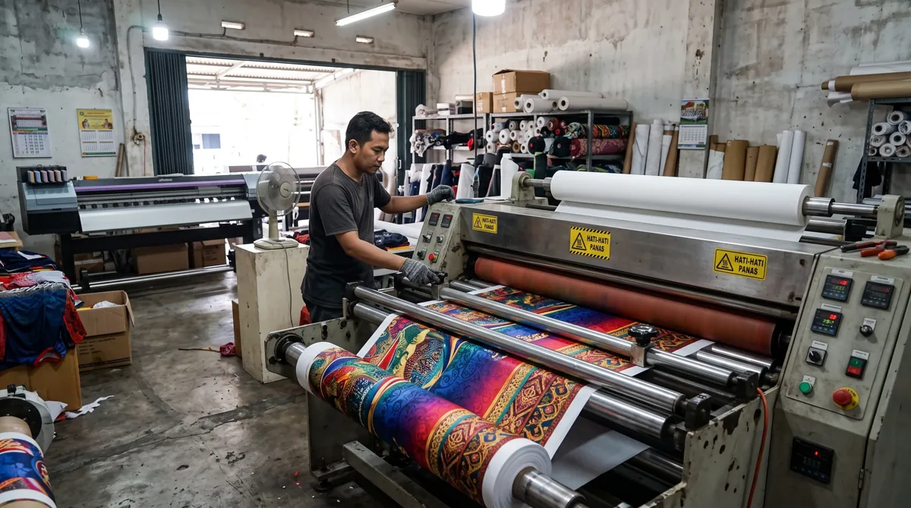

Memahami metode sublimasi membantu Anda menilai apakah teknik ini cocok untuk seragam tim dengan motif penuh warna. Artikel ini membahas aspek yang perlu diperiksa agar keputusan Anda lebih tepat, baik untuk seragam komunitas, tim olahraga, sekolah, maupun kebutuhan acara.
Dalam memilih layanan jersey printing, sebaiknya pertimbangkan bukan hanya tampilan desain, tetapi juga fungsi bahan, ketepatan ukuran, dan kesiapan data pesanan. Untuk gambaran menyeluruh, baca panduan printing jersey Bandung.
Bagaimana sublimasi bekerja
Desain digital dicetak menggunakan tinta sublimasi pada kertas transfer khusus. Dengan suhu dan tekanan yang sesuai, zat warna berpindah ke serat polyester. Hasilnya bukan lapisan tebal yang menempel di atas kain, melainkan warna yang menyatu dengan material.
Kapan teknik ini cocok dipilih
Sublimasi efektif untuk motif penuh, gradasi, nomor punggung, dan elemen grafis kompleks pada kain polyester yang sesuai. Teknik ini bukan pilihan universal untuk semua jenis serat atau warna dasar kain.

Hal yang memengaruhi hasil
Kualitas file, profil warna, jenis polyester, pengaturan panas, dan kontrol produksi memengaruhi ketajaman hasil. Warna di monitor tidak selalu identik dengan warna pada kain sehingga sampel dan persetujuan desain tetap penting.
Langkah praktis sebelum menentukan pilihan
Gunakan panduan ini sebagai titik awal, lalu sesuaikan dengan aktivitas, anggaran, kebutuhan desain, dan jumlah anggota tim. Jika terdapat spesifikasi khusus, komunikasikan sejak awal agar solusi yang ditawarkan tidak hanya terlihat menarik di gambar tetapi juga sesuai saat digunakan.
Untuk kebutuhan produksi di Bandung, pelajari juga panduan printing jersey Bandung yang menjelaskan pilihan bahan, teknik sublimasi, serta alur pemesanan. Anda juga dapat mengenal layanan jersey printing dari Zipzip dan mendiskusikan detail proyek secara langsung.
Artikel terkait yang dapat membantu
- Printing Jersey Bandung
- Perbedaan Jersey Printing Sublimasi dan Sablon: Mana yang Cocok?
- Tahapan Proses Produksi Jersey Printing dari Desain hingga Finishing
Masih ada pertanyaan tentang spesifikasi atau kebutuhan tim? Hubungi Zipzip untuk membahas opsi yang sesuai dengan desain dan jadwal Anda.